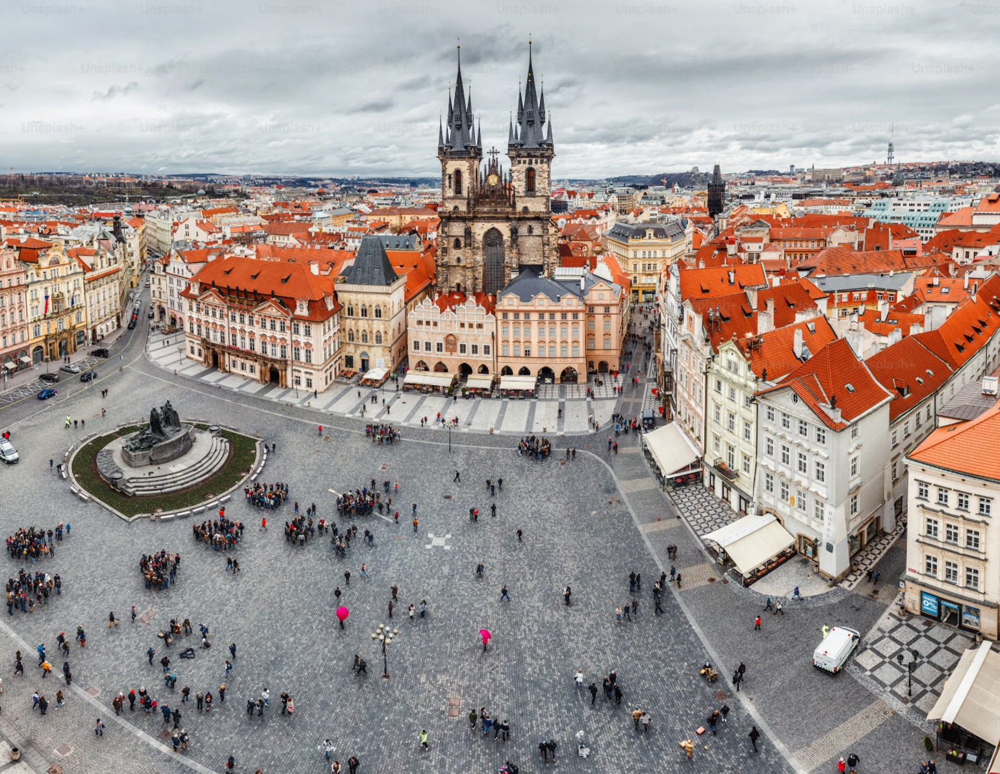
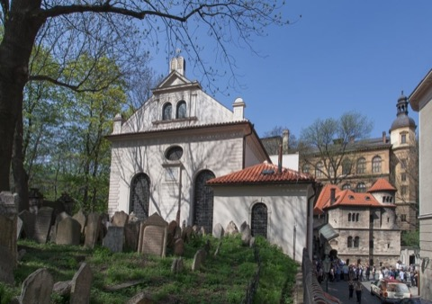

Was kann man in Prag machen? Zwölf Dinge, die sich wirklich lohnen
„Was muss man hier unbedingt gesehen haben?“ höre ich fast von jeder Gruppe, noch bevor wir losgehen. Hier ist meine Antwort: zwölf Dinge, jeweils mit der besten Uhrzeit, dem ungefähren Preis und dem, was ich Gästen dazu sage.


Ich führe seit Jahren Paare, Familien, Alleinreisende und Gruppen durch Prag. Die Liste unten ist keine Rangliste der bekanntesten Sehenswürdigkeiten, sondern das, was ich meinen Gästen tatsächlich empfehle, in der Reihenfolge, in der es für die meisten Sinn ergibt. Die ersten fünf Punkte liegen alle im Zentrum und lassen sich zu Fuß verbinden.
Die zwölf Punkte im Überblick
1. Die Prager Burg
Beste Zeit: ab 9 Uhr · Areal frei, Rundgang B 250 CZK
Die Prager Burg gilt als größte zusammenhängende Burganlage der Welt, und das merken Sie, sobald Sie durch das Tor gehen. Sie ist keine einzelne Sehenswürdigkeit, sondern eine Stadt in der Stadt, mit Dom, mehreren Palästen, einer Gasse, einem Weinberg und der Wachablösung täglich um 12 Uhr am Haupttor.
- Den Veitsdom von innen, besonders das Mucha-Fenster im Morgenlicht.
- Den Alten Königspalast mit dem Wladislawsaal, in dem früher Ritterturniere stattfanden.
- Das Goldene Gässchen: bunte Häuschen, in denen Burgwächter wohnten und Kafka eine Zeit lang schrieb.
Das Burgareal selbst betreten Sie kostenlos, für die Innenräume genügt den meisten Besuchern Rundgang B. Wie Sie die Burg ohne Gedränge schaffen, steht im Besucher-Guide zur Prager Burg. Mein Tipp: mit der Tram hinauf und über das Strahov-Kloster anfangen, dann geht es den ganzen Tag bergab.
2. Die Karlsbrücke zur richtigen Zeit
Beste Zeit: vor 8 oder nach 19 Uhr · Brücke frei, Brückenturm 130 CZK
Die Karlsbrücke braucht keine Einleitung, aber das richtige Timing. Vor 8 Uhr morgens oder nach 19 Uhr abends ist sie eine andere Brücke: ruhig, mit Blick auf eine Stadt, die noch nicht ganz wach ist oder schon zur Ruhe kommt.
Steigen Sie auf den Altstädter Brückenturm. Von oben sehen Sie die ganze Reihe der Barockstatuen und dahinter den Burgberg. Es ist einer der schönsten Aussichtspunkte der Stadt, und kaum jemand geht hinauf. Welche Stellen sich für Fotos lohnen, habe ich in den besten Fotospots in Prag gesammelt.
3. Der Altstädter Ring und die Orloj
Beste Zeit: zur vollen Stunde, 9 bis 23 Uhr · Platz frei, Rathausturm 250 CZK
Zu jeder vollen Stunde von 9 bis 23 Uhr setzt sich die astronomische Uhr in Bewegung: Der Tod läutet, die zwölf Apostel ziehen an den Fenstern vorbei, ein Hahn kräht. Nach 45 Sekunden gibt es Applaus. Man kann das kitschig finden, aber ich habe noch keine Gruppe erlebt, die nicht hingeschaut hat.
Der Platz selbst ist architektonisch ungewöhnlich: gotische Teynkirche, barocke Kuppeln, Renaissance-Giebel, alles nebeneinander. Den besten Überblick haben Sie vom Rathausturm. Die Restaurants direkt am Platz mit Speisekarten in fünf Sprachen meide ich. Gehen Sie 50 Meter weiter in die Dlouhá, dort zahlen Sie für das gleiche Essen deutlich weniger.
4. Josefov, das Jüdische Viertel
Beste Zeit: Vormittag, samstags geschlossen · Kombiticket ab 350 CZK
Das ehemalige Ghetto wurde Ende des 19. Jahrhunderts fast vollständig abgerissen. Erhalten blieben sechs Synagogen, der Alte Jüdische Friedhof und das Jüdische Rathaus mit der Uhr, deren Zeiger rückwärts laufen.
Der Alte Jüdische Friedhof gehört zu den ältesten erhaltenen jüdischen Friedhöfen Europas. Die Gräber liegen in mehreren Schichten übereinander, weil der Platz nie reichte. Den Eintritt bekommen Sie über das Jüdische Museum. Am Samstag und an jüdischen Feiertagen ist alles geschlossen, das überrascht viele Gäste.
Gegenüber dem Jüdischen Rathaus steht die Altneusynagoge aus dem 13. Jahrhundert, die älteste noch genutzte Synagoge Europas. Mit ihr ist die bekannteste Prager Sage verbunden. Rabbi Judah Löw ben Bezalel, der hier im 16. Jahrhundert lehrte, soll aus Lehm von der Moldau einen Golem geformt haben, eine stumme Gestalt, die das Ghetto vor Übergriffen schützen sollte. Zum Leben erweckte er ihn mit einem Zettel, auf dem der Gottesname stand und den er ihm in den Mund legte. Freitags vor dem Sabbat nahm er ihn wieder heraus. Als er es einmal vergaß, wurde der Golem wild, und der Rabbi musste ihn für immer stilllegen. Die Überreste soll er auf den Dachboden der Altneusynagoge gebracht haben. Die Treppe hinauf beginnt außen an der Wand erst in einigen Metern Höhe, und der Dachboden ist für Besucher nicht zugänglich. Das hat der Legende eher geholfen.
Historisch belegt ist Rabbi Löw, nicht der Golem: Die Sage wurde erst im 19. Jahrhundert mit ihm verbunden. Sein Grab auf dem Alten Jüdischen Friedhof besuchen Sie mit dem Ticket des Jüdischen Museums. Auf den Grabstein legen Besucher kleine Steine und Zettel mit Wünschen. Mehr dazu im Artikel über das Jüdische Viertel.

5. Die Kleinseite und die Insel Kampa
Beste Zeit: Nachmittag · frei
Die Kleinseite (Malá Strana) liegt zwischen Karlsbrücke und Burgberg, ein Viertel aus Barockpalästen, Gärten und Gassen, in denen die Zeit etwas langsamer läuft als im Rest der Stadt.
Die Insel Kampa ist mein persönlicher Lieblingsort in Prag: ein kleiner Park direkt am Wasser, mit Blick auf die Brückenbögen und fast ohne Souvenirläden. Zwei Minuten entfernt liegt die John-Lennon-Mauer, entstanden nach Lennons Tod 1980, immer wieder übermalt und neu beschrieben. Wer Ruhe sucht, findet sie in den Gärten der Kleinseite und im Waldstein-Garten.
6. Vyšehrad
Beste Zeit: später Nachmittag · Areal frei · Metro C bis Vyšehrad
Vyšehrad ist laut Legende die ältere der beiden Burgen, der Ort, an dem Fürstin Libuše die Gründung Prags vorhersagte. Heute ist es eine Festung auf einem Felsen über der Moldau, mit dem Nationalfriedhof, auf dem Dvořák, Smetana und Mucha begraben sind.
Ich empfehle Vyšehrad, weil hier keine Reisebusse halten und keine Souvenirläden in Sichtweite sind. Der Blick von den Festungsmauern auf den Fluss ist einer der besten der Stadt, und er kostet nichts.
7. Auf der Moldau
Beste Zeit: Abend · Rundfahrten ab etwa 500 CZK, Tretboote günstiger
Vom Wasser aus sehen Sie ein anderes Prag: die Karlsbrücke von unten, die Silhouette der Burg, die Gärten am Ufer. Es gibt geführte Abendfahrten, Tret- und Ruderboote zum Selbstfahren an der Slawischen Insel und Kajaks für Sportlichere.
Das Ruderboot ist mein Tipp für alle, die selbst bestimmen wollen, wohin es geht: wenig Geld, keine Reservierung, und Sie kommen an Stellen, die kein Ausflugsboot anfährt. Welche Fahrten sich lohnen, steht im Artikel über Bootsfahrten auf der Moldau.
8. Letná-Park und Biergarten
Beste Zeit: Sonnenuntergang, April bis Oktober · frei
Letná liegt auf einem Hügel nördlich der Altstadt. Am Rand des Parks öffnet sich das beste kostenlose Panorama der Stadt: alle Brücken hintereinander, die Altstadt, die Burg. Der Biergarten daneben schenkt Bier vom Fass aus, ohne Eintritt und ohne Reservierung, und hat die entspannteste Stimmung der Stadt.
9. Tschechisch essen, Bier vom Fass
Beste Zeit: Mittagsmenü unter der Woche · Bier ab etwa 60 CZK
Tschechien hat seit Jahren den höchsten Bierkonsum pro Kopf weltweit. Pilsner Urquell, Kozel, Bernard: Alle schmecken vom Fass in einer echten Prager Kneipe (hospoda oder pivnice) besser als im Touristenrestaurant am Platz.
Ohne Touristenaufschlag essen Sie im Lokál Dlouhá (Dlouhá 33), bei U Medvídků (Na Perštýně 7) und im Pivovarský dům (Ječná 15). Probieren Sie Svíčková na smetaně, Rinderbraten in Rahmsoße mit Knödeln, das bekannteste tschechische Gericht. Den Trdelník vom Stand können Sie auslassen: Er ist keine tschechische Tradition, sondern erst in den letzten Jahren für Touristen aufgekommen. Mehr Adressen im Kulinarik-Guide.
10. Der Petřín-Hügel
Beste Zeit: Frühling zur Obstblüte · Aussichtsturm 150 CZK, Standseilbahn mit Fahrschein
Der Petřín ist der bewaldete Hügel über der Kleinseite. Oben steht ein Aussichtsturm, 1891 als kleiner Bruder des Eiffelturms gebaut, mit 299 Stufen oder einem Aufzug. Die Standseilbahn hinauf fährt mit einem normalen Fahrschein. Im April und Mai blühen an den Hängen die Obstbäume, dazu mehr im Artikel über Prag im Frühling.
11. Jazz, Konzerte und Abende
Beste Zeit: ab 21 Uhr · Jazzclubs ab etwa 200–300 CZK
Prag hat eine lebendige Jazzszene. Im Reduta Jazz Club (Národní 20) spielte Bill Clinton 1994 Saxofon, dazu kommen AghaRTA (Železná 16) und der Jazz Dock direkt am Wasser (Janáčkovo nábřeží 2).
Klassische Konzerte in historischen Kirchen gibt es fast täglich, die Qualität schwankt aber stark. Für ein richtiges Konzertprogramm gehen Sie ins Rudolfinum oder ins Nationaltheater.
12. Was sich beim Einkaufen lohnt
So verteile ich das auf drei Tage
Nur einen Tag? Dann lesen Sie Ein Tag in Prag. Wann sich die Reise am meisten lohnt, steht unter Beste Reisezeit für Prag, und was Sie lieber lassen, unter Was man in Prag nicht tun sollte.
Häufige Fragen
Wie viele Tage braucht man für Prag?
Für die Klassiker zwei volle Tage. Mit drei Tagen bleibt Zeit für Vyšehrad, Letná oder eine Bootsfahrt, ohne zu hetzen.
Was kann man in Prag kostenlos machen?
Das Burgareal, die Karlsbrücke, den Altstädter Ring mit der Orloj, Kampa, Vyšehrad und den Letná-Park. Bezahlen müssen Sie nur für Innenräume und Türme.
Was kann man in Prag bei Regen machen?
Veitsdom und Königspalast, die Synagogen in Josefov, die Strahover Bibliothek, das Klementinum oder eines der Museen aus der Museumsübersicht.
Lohnt sich der Prague Visitor Pass?
Nur, wenn Sie viele Eintritte an wenigen Tagen planen. Ich habe ihn hier durchgerechnet.
Was kann man in Prag mit Kindern machen?
Die Orloj zur vollen Stunde, die Standseilbahn auf den Petřín mit dem Spiegellabyrinth, ein Tretboot auf der Moldau und die Wachablösung an der Burg.
Offizielle Seiten für aktuelle Angaben
- Prager Burg: Öffnungszeiten und Tickets
- Jüdisches Museum Prag: Synagogen und Friedhof
- Prague City Tourism: prague.eu (Türme, Rathaus, Petřín)